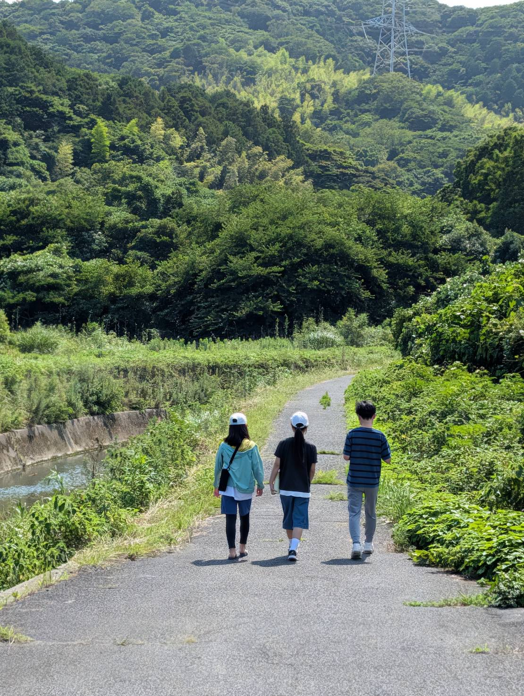

MESSAGE
楽長の想い

子どもは、無限大の可能性の種を持っていると思います。
その可能性の芽を伸ばし、自分らしい花を咲かせるのは、子ども自身ですが、そうなるための環境は大人がつくれるのではないかと思います。
私の場合、それが肌で感じる体験を積んでいくことです。子どもが枠や型に囚われず、自分の好きや好奇心、興味関心、そして違和感を大切に自分を育てる。
大人は、子どもが学び取り、芽を伸ばしていくための、太陽や水、空気、養分のような存在になれればと思っています。
心身ともに健やかに育ち、自分を信じて、将来社会の中で思いきり輝き、自分も周囲も喜ばせて貢献できる人になれれば、素敵だと思います。
そのために、同じく無限大の可能性を持つ大人の私たちが楽しく生き、子どもと遊び、体験する。そんな居場所、楽校にしたいと思っています。